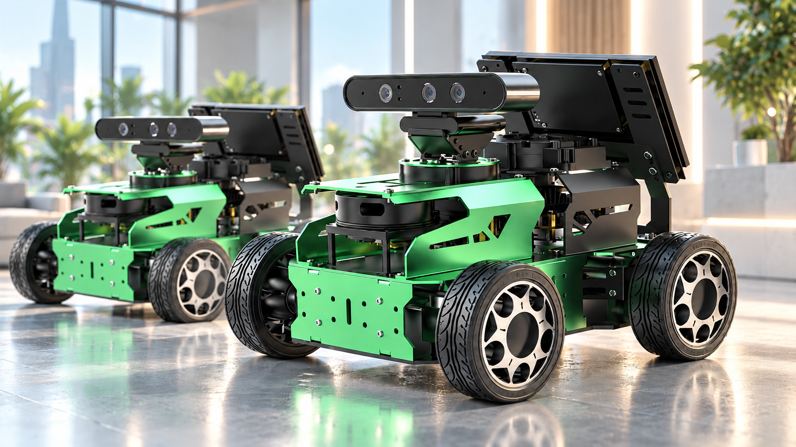
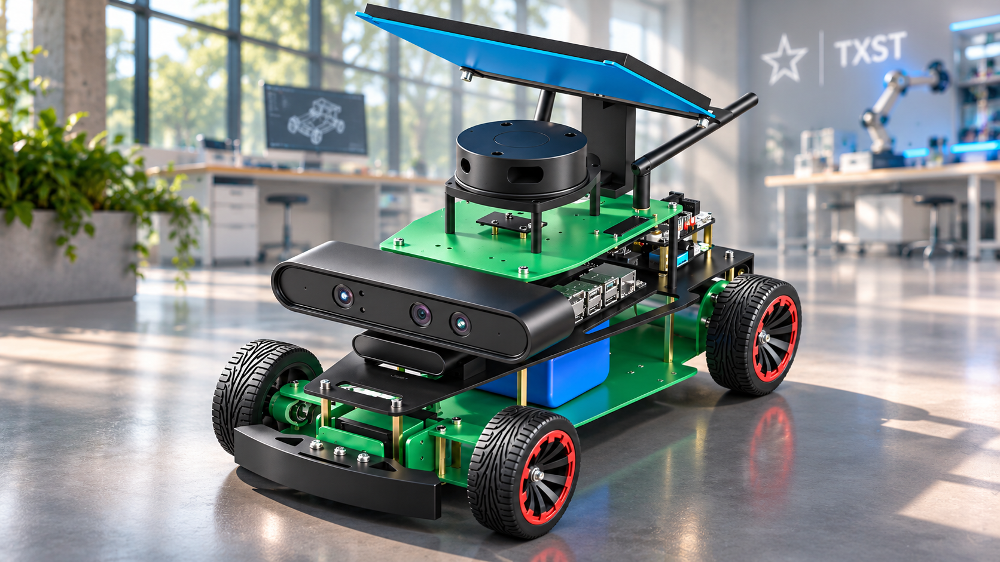

01
Machine learning & perception
Machine learning, deep learning, scene understanding, and models of interaction in complex mobility environments.
Research equipment & resources
Our robotics platforms and research materials support hands-on work in embodied AI, autonomous mobility, perception, planning, and safety-critical control.

assets/JetAcker-Robots.png to display the photo here.LLM-guided Mobile Robots
Two GPT-enabled, ROS-based autonomous platforms for research in mobile robotics, perception, mapping, navigation, and human–robot interaction.
View JetAcker platform
assets/Yahboom-Robots1.png to display the photo here.LLM-guided Mobile Robots
Two GPT-enabled, ROS-based autonomous platforms for research in mobile robotics, perception, mapping, navigation, and human–robot interaction.
Visit YahboomMachine learning, deep learning, scene understanding, and models of interaction in complex mobility environments.
Behavior prediction, sequential decision-making, optimization, and interaction-aware planning.
Dynamic systems, robust and safety-critical control, simulation-based evaluation, and real-time autonomy.